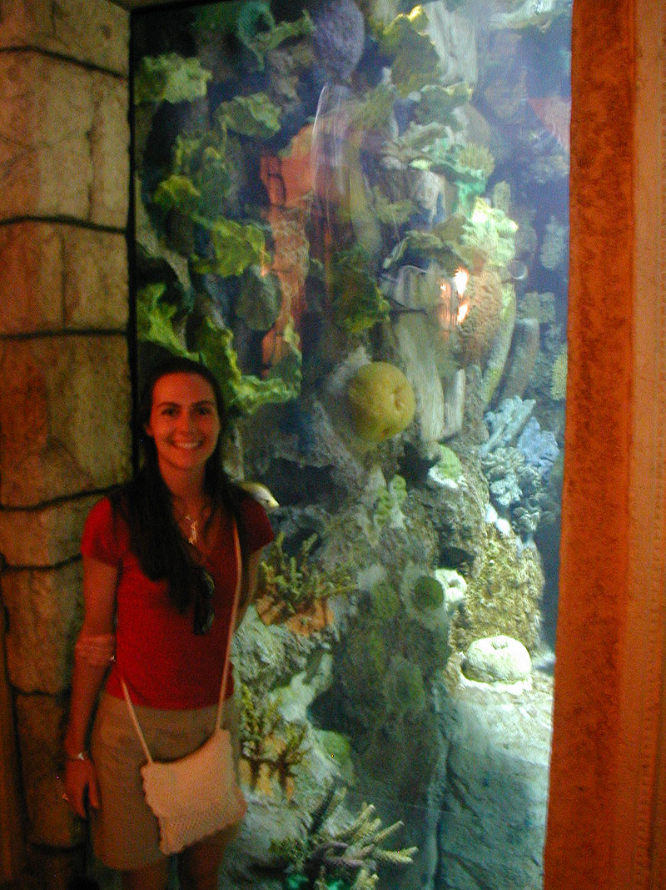

Mandalay BayThis was a huge tank with a great coral reef display. The coral in there though is all fake as Coral Reefs are endangred regions. Coral grows at about 1/2" to 4" per year so a big chunk of it like is used in this display would take forever for nature to replace. Hence the creation of the fake stuff. The fish didn't seem to notice which raises the question - can nature coral be replaced with fake stuff out in the wild? |
back to main page |
|  |